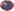
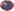

🌈 Me chamo Gustavo Poester, sou artista, designer gráfico, diretor de arte, cenógrafo e aprendiz a desenvolvedor residente nas cidades de Buenos Aires (ARG) e Porto Alegre (BR). Acesse meu CV<
🎨 To inspire é uma página criada com o objetivo de trazer referencia e inspiração
pictórica através de imagens aleatórias de obras de arte. Os milhares de trabalhos disponíveis são parte da
incrível catalogação do banco de dados do Museu de Arte de Chicago.
O círculo, em espiral, giratório
é uma escolha estética que ressalta o universo (quase) infinito que o usuário acessa. A interface de usuário
dispensa apresentações e tenta resumir toda a informação e usabilidade no próprio cursor, que, simulando o
ato do jogar peão, roda para acessar o abismo de possibilidades imagéticas.
Além disso, a página foi
desenvolvida principalmente em JavaScript, CSS, HTML(jsx) dentro do framework React.
🎭 Galeria é uma interface que dispõe imagens em interação com a movimentação do cursor do usuário. A experimento é sobretudo um treino que explora as possibilidades de disposição de imagens no meio digital utilizando HTML, CSS, JavaScript e a biblioteca de ferramentas de animação GreenSock.
💋 Ninfomaníaca é uma página de apresentação e divulgação do livro Ninfomaníaca: fantasia ou realidade de Alessandra Linck.
🎭 Moscas é um espetáculo teatral que completou ao todo 3 temporadas entre o período de 2015 e
2016 e foi patrocinado pelo festival Sesc Palco Giratório e Porto Alegre em cena. Em cena, os atores
conduziam o público dentro de um antigo casarão aonde reproduziam e comentavam cenas de rituais comuns a
cultura hegemônica (natal, nascimento, casamento, baile de debutantes).
Participei ativamente da montagem, assistencia de arte, cenografia e produção executiva, inclusive tendo
sido indicado ao prêmio Açorianos de produção do ano de 2017.
✨ Soundlights (hoje RECREIO) é um conjunto musical indie-psicodélico encabeçado pelo artista compositor Arthur Valandro. Participei do trabalho como diretor de arte, tendo como funções elaborar o conceito visual e estético da banda e do artista atráves da formulação de imagens, símbolos e temáticas. Durante este trabalho idealizei, dirigi, produzi e editei ensaios fotográficos e de vídeos para músicas e revistas da área. Também produzi conteúdo visual para Spotify, Youtube, SoundCloud, Facebook e Instagram.
🎬 Ana. Sem Título é um longametragem (road-movie) dirigido por Lúcia Murat (Quase Dois Irmãos) e produzido por Taiga Filmes, que se passa em diversas cidades da américa latina. No longa trabalhei como assistente da diretora de arte Manuela Falcão (Tinta Bruta) onde idealizamos e montamos diversos cenários, objetos e material gráfico.
🔪 Necrópolis é uma série da VERTE FILMES veiculada no Netflix. Trabalhei como pintor de cena e auxiliar a direção de arte, maquiando e produzindo cenário e objetos.
🔳 Protótipo de página para a empresa de quadros MI CUADRADO realizado em ilustrator + figma.